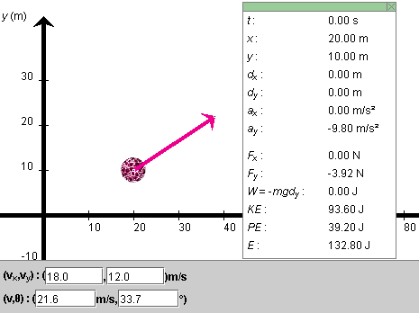
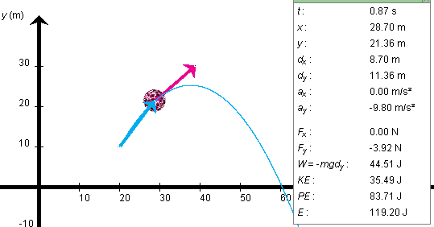

Instructions
This page is designed to get you started using the applet. The applet should be open. The step-by-step instructions on this page are to be done in the applet. You may need to toggle back and forth between instructions and applet if your screen space is limited.
 Setting the Ball's Initial
Position and Velocity
Setting the Ball's Initial
Position and Velocity
 Observing the Ball's Motion and
Energy
Observing the Ball's Motion and
Energy
Exercise 1 (Initial Position). RESET  the applet.
the applet.
Press the Data toggle button  to display the Data box. It displays the ball's
x and y position coordinates. They are updated
when you drag the ball.
to display the Data box. It displays the ball's
x and y position coordinates. They are updated
when you drag the ball.
Click on the ball, and drag it to the initial position
(x,y) = (20.0, 10.0) m, as shown in Figure 1
below. You may find this easier to do if you display the grid
by pressing the Grid toggle button  . (The grid is not shown in Figure
1.)
. (The grid is not shown in Figure
1.)
It also helps to adjust one coordinate at a time. Drag the ball to x = 20.0 m without worrying about the y-coordinate. Then, hold down the Shift key while dragging the ball. Now the ball will move only vertically, and it will be much easier to adjust its initial y-coordinate to 10.0 m. The x-coordinate will remain unchanged while the Shift key is held down.

Figure 1
Exercise 2 (Initial Velocity). The magenta arrow represents the ball's velocity. Adjust the initial velocity so that its magnitude is 20 m/s and its direction forms an angle q with the positive x-axis equal to 60o. Do this by typing these values in the third and fourth velocity data fields, shown at the bottom of Figure 1, and then press the ENTER key on the keyboard.
Notice how the display of the x and y components of the ball's velocity is automatically adjusted to vx = 10.0 m/s and vy = 17.3 m/s. You can enter values in any of the four velocity data fields. When you press ENTER, the values in the other fields are adjusted automatically so that they are consistent.
You can adjust the initial velocity also by dragging the tip of the velocity vector. The four velocity data fields will be adjusted accordingly.
Note that there is usually some round-off involved when the applet calculates vx and vy to one decimal from v and q, and vice versa. The rounded values are displayed in the velocity data fields. However, the exact values corresponding to the values entered by the user are used by the applet in calculations.

Exercise 1. REWIND the applet, display the Data box, and make sure that the ball's initial position and velocity are as in the previous section. These values are listed below. Otherwise, RESET the applet and then adjust the applet to these values.
PLAY the motion. Display the ball's path by pressing the
Trace toggle button  .
.
When the ball has disappeared from the applet window, REWIND
 the applet.
Set the Energy Bar Scale slider to 10. PLAY the motion once
more, and this time observe the changes in the energy column.
As the ball is rising, the blue potential energy portion is
increasing in height while the red kinetic energy portion is
decreasing so that the total height of the column,
representing the total energy, remains constant. When the
ball is coming back down, the potential energy is decreasing
and the kinetic energy is increasing.
the applet.
Set the Energy Bar Scale slider to 10. PLAY the motion once
more, and this time observe the changes in the energy column.
As the ball is rising, the blue potential energy portion is
increasing in height while the red kinetic energy portion is
decreasing so that the total height of the column,
representing the total energy, remains constant. When the
ball is coming back down, the potential energy is decreasing
and the kinetic energy is increasing.
Exercise 2. REWIND the applet. This time, STEP
 through the
motion by clicking the Step button repeatedly.
through the
motion by clicking the Step button repeatedly.
Observe that the horizontal component of the velocity vector, i.e., the value of vx in the data panel stays constant at 10.0 m/s. The vertical component vy of the velocity is continually decreasing on the way up, becomes zero at the top, and continues to decrease on the way down. (vy is negative on the way down. Therefore, although the absolute value |vy| increases, vy itself decreases. E.g., -10 is less than -5.)
Exercise 3. As another element of the motion, observe
the ball's acceleration. Do so by selecting the Vectors
toggle button  and checking Acceleration in the panel that opens up.
The acceleration vector is shown as an orange arrow.
and checking Acceleration in the panel that opens up.
The acceleration vector is shown as an orange arrow.
PLAY the motion for different initial velocities, and observe the acceleration vector each time. To do so, REWIND the applet and set the initial velocity component differently than before. Then PLAY the motion. Observe that the acceleration vector is constant throughout each motion and is the same for all motions.
The ball's acceleration is equal to the acceleration due to gravity. You can vary the magnitude g of the acceleration due to gravity, and therefore the magnitude of the ball's acceleration, between 0 and 20 m/s2 by means of the g-slider. Replay the previous motions for another value of g, and again observe the acceleration. It should still be constant, but different from before.
Also observe that a smaller value of g results in a higher trajectory.
Exercise 1. REWIND the applet, and make sure that the applet is set to the initial conditions
STEP through the
motion by clicking the Step button repeatedly until you reach
the same elapsed time as in Figure 2 below, namely, t
= 0.87 s. Adjust the Time Step slider to large time steps at
first, say, 0.20 s, and then to 0.01-s time steps as you
approach t = 0.87 s.

Figure 2
Compare the position and displacement values displayed by your applet to those shown in Figure 2 above. The displacement vector taken from the beginning of the motion is shown in cyan in Figure 2. Display this vector by selecting "Displacement" in the vector panel. The components dx and dy of the displacement vector are shown in the Data box.
Fine-tuned stepping through a motion is useful in determining the time required for the ball to reach a certain position, e.g., its maximum height or the time required to drop back down to the x-axis.
Exercise 1. RESET the applet. Select the Coordinates
button  button, and click anywhere in the applet window.
A small "+" will be placed at the point clicked, and the
(x,y)-coordinates of the point will be
displayed. The coordinates remain displayed after the mouse
button is released. With the Coordinates button selected,
click on a point marked by a "+", and drag it to a new
location. Click on the "+" without dragging it, and the "+"
and its coordinates will be removed, but only if the
Coordinates button is selected.
button, and click anywhere in the applet window.
A small "+" will be placed at the point clicked, and the
(x,y)-coordinates of the point will be
displayed. The coordinates remain displayed after the mouse
button is released. With the Coordinates button selected,
click on a point marked by a "+", and drag it to a new
location. Click on the "+" without dragging it, and the "+"
and its coordinates will be removed, but only if the
Coordinates button is selected.
Exercise 1. RESET the applet, and set the applet to the initial conditions
Keep the ball's mass and the magnitude of the acceleration due to gravity equal to m = 0.4 kg and g = 9.8 m/s2, respectively.
Display the Data box, and PLAY and STEP the ball's motion to time t = 0.87 s, the instant illustrated in Figure 2 above.
Calculate the work W done on the ball by the gravitational force from the equation
W = -mgdy
using the value for the vertical component dy of the ball's displacement given in the Data box. Compare your result for W with that displayed in the Data box. Your answer should be W = 44.53 J. Note that this value differs from the 44.51 J displayed in the Data box. The discrepancy is due to round-off in the value of dy. A displacement dy = 11.355 m is consistent with the value 11.36 m displayed in the Data box and would give W = 44.51 J.
Also measure the value of dy approximately by placing a point marker at the ball's position. (See the preceding section "Measuring Point Coordinates".) After dragging the marker to the center of the ball's, you will have to PLAY the motion to move the ball out of the way. Compare your measured value of dy to that in the Data box in Figure 2 and in your applet.
Exercise 2. REWIND the applet. Record the value of the potential energy PE from the Data box. It should be PE = 39.20 J.
Again PLAY/STEP the motion to t = 0.87 s. Record the new value of the potential energy at t = 0.87 s. It should be PE = 83.71 J. Work out the change in the potential energy, DPE = PE0.87 - PE0. Verify that
DPE = -W.
Note that in this case DPE > 0 and that -W > 0 as well, since W < 0.
Exercise 3. REWIND the applet and record the value of the kinetic energy KE. It should be 80.00 J. Verify that it is equal to
KE = (m/2)v2.
Also verify that
E = PE + KE,
both at t = 0 and at t = 0.87 s.